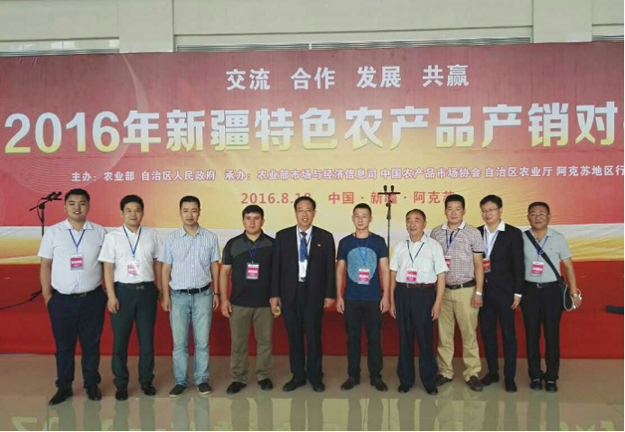
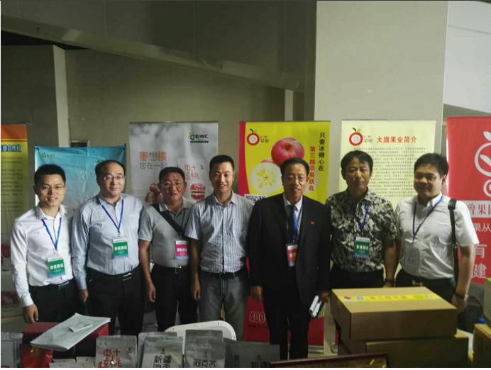
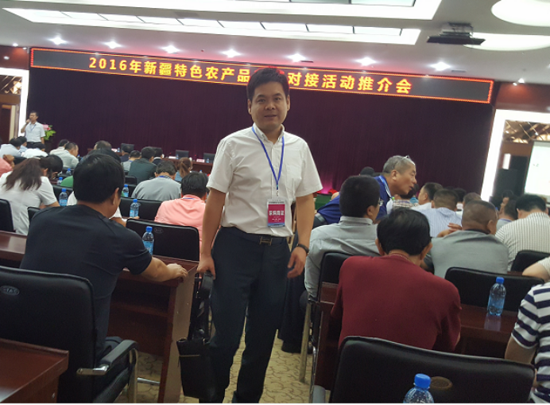
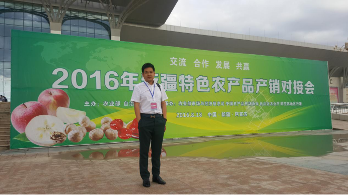
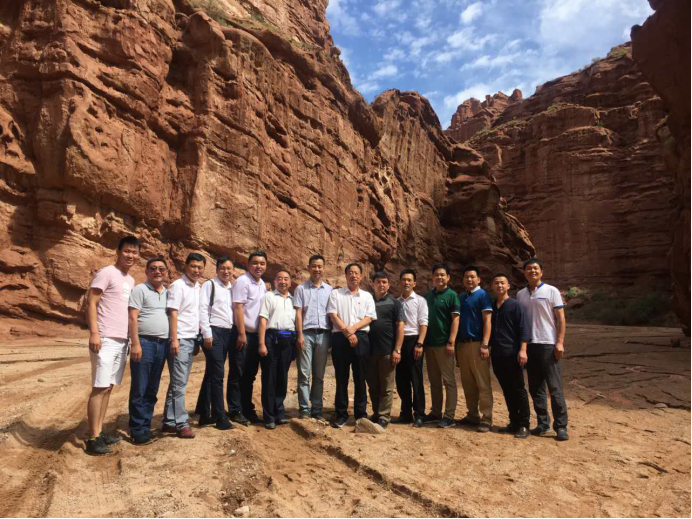

郑得厚总经理参加2016年新疆特色农产品产销对接会
2016-12-25
8月17—19日，受农业部和新疆维吾尔自治区人民政府的邀请，世纪联农（北京）农产品股份有限公司郑得厚总经理赴新疆阿克苏地区参加2016年新疆特色农产品产销对接会。

8月18日，由农业部和自治区人民政府共同举办的2016年新疆特色农产品产销对接会在阿克苏国际博览中心举行。农业部副部长屈冬玉，国务院参事室特约研究员、农业部原党组成员、中国农产品市场协会会长张玉香，中国农产品市场协会执行会长、北京新发地集团董事长、北京新发地农产品批发市场董事长张玉玺，农业部相关司局，新疆维吾尔自治区相关厅局，阿克苏地委、行署、人大、政协及南疆和东疆等7个地州市领导，全国部分省市农产品批发市场、新疆农产品企业代表和广播、电视、报纸、网络等媒体的记者，400余人参加了此次活动。


会议期间，郑得厚总经理介绍了北京新发地新疆厅的经营情况和发展方向。肯定了双方在新疆特色农产品产销合作方面取得的成绩。从2010年我公司全面托管北京新发地新疆厅的运营和管理工作以来，每年新疆产品交易量高达2500多万公斤，交易总额达6亿多元，是目前新疆农副产品在华北地区对外销售的最大单体平台，该平台得到了自治区多部门及北京新发地的重视和认可。

郑得厚总经理介绍了关于保定工农路蔬菜果品批发市场改扩建项目的建设情况及发展规划，并就在保定工农路蔬菜果品批发市场建立新疆农副产品交易大厅达成了合作意向。

会议结束后，郑得厚总经理陪同北京新发地农产品批发市场张玉玺董事长、北京新发地农产品批发市场张月琳总经理，赴新疆红旗坡农业发展集团有限公司所经营的红旗坡农场阿克苏苹果种植基地进行了考察。